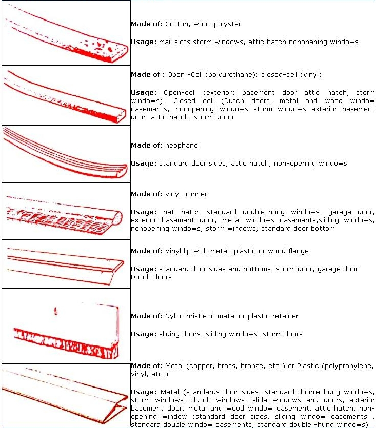
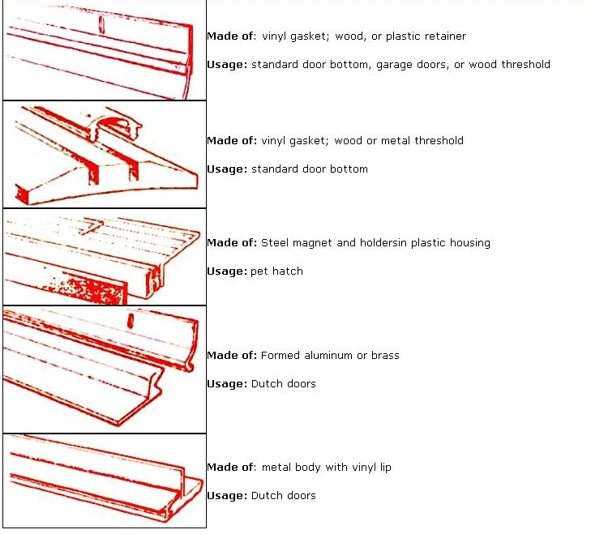

LIKE CAULKING, THE HARDEST PART OF WEATHER STRUMMING IS FIGURING which material to use. Using the chart in the image gallery, assess your needs in each pan of the house and figure out how much you want to spendThen, you just need to follow a few simple rules (in addition to the manufacturer's directions):
*To determine the amount of stripping needed, measure the perimeters of all areas to be weather-stripped and then add 10% to allow for waste.
*Before installation, the surface area must be smooth and free of dirt or particles that nigh Wing from making a complete seal against the surface.
*Apply one continuous strip to each joint, making sure that the stripping is tight at the comers.
*After installation, check to see if it makes contact with the fixed and movable sections of the joint; the material should be slightly compressed when the door or window is shut.Take into account the thickness the stripping will add to a frame; in some cases the frame or movable parts my Wave to be planed to permit proper closing.
<< GETTING READY FOR WINTER >>
|
 |
 |
|